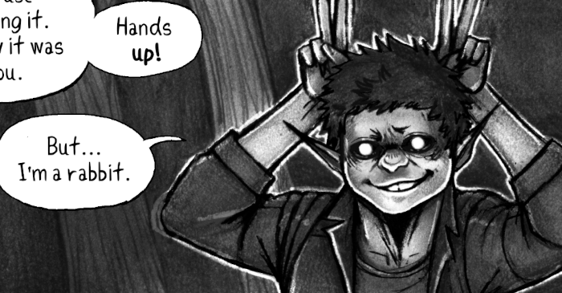
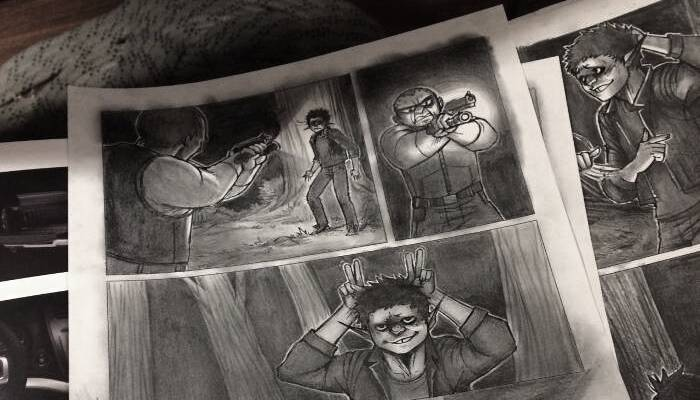
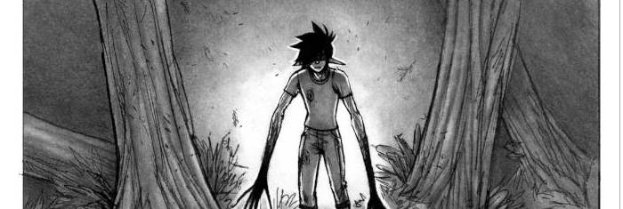
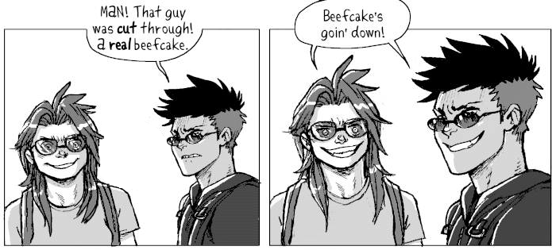

About
About Projects
Projects Books
Books Games
Games Stories
Stories Store
Store Notes
Notes How-to
How-to
In the early 1980's something in the Taiga(forest) has started affecting humans, changing their physique, hurting, killing or disabling others.
A group of humans, touched by this phenomenon as kids, now spend all their time in the Taiga, sabotaging projects that threaten it under the name The Solomon's Devils, or Solo Devs for short.
Content
Hakum is drawn and shaded by hand with pencils. I made a font based on my handwriting (named Katkum) specifically for this comic.
On Worldbuilding
 It is not easy to flesh out stories. It is a fun, and highly iterative process. Nothing is set in stone, drawing out bits of the comic does not mean the story will remain the same. It is a way of playing with the characters, to get to know them and to further develop the world. This is what this comic is for me, drawing them out in various non-sequential situations is a way to discover a workable story. Keep this in mind while browsing this page.
It is not easy to flesh out stories. It is a fun, and highly iterative process. Nothing is set in stone, drawing out bits of the comic does not mean the story will remain the same. It is a way of playing with the characters, to get to know them and to further develop the world. This is what this comic is for me, drawing them out in various non-sequential situations is a way to discover a workable story. Keep this in mind while browsing this page.
"Tolkien, for all his vaunted designs, only got to The Good Stuff when he was IN it, really working the text of the novels. He could not worldbuild his way into a workable story; he had to muddle and discover and revise, just like the rest of us." [Source].
What is monkeywrenching?
"Monkeywrenching" is based on the US idiom "to throw a monkey wrench into..." which means to sabotage something. The term was coined by Edward Abbey (from the book The Monkeywrench Gang) and its come to mean, besides sabotage and damage to machines, any sabotage, activism, law-making, or law-breaking to preserve wilderness, wild spaces and ecosystems.
Comics
NIGHT TERROR
Read the comic [Complete, 21/21 pages]
RULER OF THE TAIGA

Read the comic [Complete, 6/6 pages]
Comic Archives
I made a bunch of other comics using these same characters, but the concept was different(and now isn't canon). You can still view them in the hakum archive.
